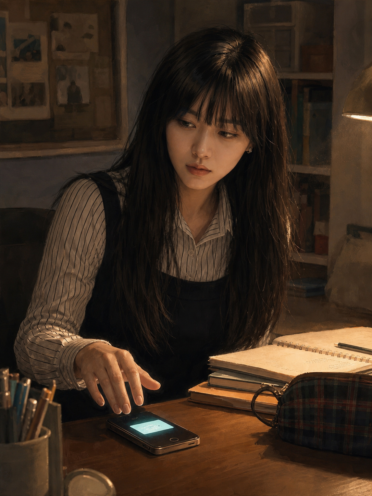

056. 학원자료
화요일 낮, 학생식당 앞. 초연이 강의를 마치고 나오는데 정다은이 먼저 손을 흔들며 다가왔다.
[정다은] "초연아, 저번엔 진짜 미안. 내가 눈치 없는 척을 좀 심하게 했지."
[김초연] "아니야, 괜찮아. 이제 신경 안 써."
[정다은] "용식이가 원래 좀 그런 거 잘 못 끊어내잖아. 착해서."
정다은은 웃으며 그렇게 말하고는 손을 흔들며 강의동 쪽으로 걸어갔다. 학생식당 앞 게시판에는 다음 학기 수강신청 공지문이 붙어 있었고, 지나가는 학생들이 그 앞에 삼삼오오 모여 있었다.
장난처럼 던진 말 같았지만, 초연은 그 문장을 곱씹었다. '못 끊어낸다'는 말이 정확히 무엇을 가리키는 건지 알 수 없어서 더 신경 쓰였다. 정다은은 늘 이렇게, 별 뜻 없어 보이게 한마디를 놓고 뭔가를 남기고 가 버렸다.
저녁, 초연의 방.
두 사람은 나란히 앉아 다음 학기 시간표를 짜고 있었다. 책상 위 스탠드 불빛 아래로 시간표 종이와 볼펜, 그리고 각자의 폰이 놓여 있었다.
[김용식] "이거 화, 목 둘 다 오전 수업인데, 겹치는 거 아니야?"
[김초연] "어디 봐봐."
초연이 몸을 기울여 종이를 들여다봤다. 두 사람의 어깨가 자연스럽게 붙었다. 잠깐이지만 평소와 다름없는 편안한 시간이었다.
용식이 화장실에 다녀오겠다며 방을 나섰다.
혼자 남은 초연은 시간표 종이를 보며 펜을 굴리다가, 문득 시선이 그의 폰으로 향했다. 액정에 문자 미리보기 알림이 짧게 떴다가 사라지려는 참이었다.
글자가 화면에 떠 있던 시간은 삼 초도 되지 않았다. 초연은 순간 숨을 멈췄다. '학원자료'라는 이름. 예전에 정다은의 문자에서 스쳤던 그 이름과 같은 단어였다.
화면이 다시 꺼지고 잠금 상태로 돌아갔다. 초연은 폰을 향해 손을 뻗다가, 화장실 문 여닫는 소리에 놀라 손을 거뒀다. 심장이 빠르게 뛰었다. 방금 뭘 하려고 했는지, 스스로도 뒤늦게 자각했다.

책상 위 시계가 초침을 넘기는 소리가 유난히 크게 들렸다. 초연은 아무렇지 않은 척 시간표 종이 위에 다시 시선을 고정했다.
용식이 돌아와 자리에 앉았다. 손을 씻고 온 듯 손끝이 살짝 차가웠다.
[김용식] "뭐 보고 있었어?"
[김초연] "그냥, 시간표."
[김용식] "표정이 왜 그래."
[김초연] "아무것도 아니야. 그냥 졸려서."
용식은 별 의심 없이 다시 종이로 시선을 돌렸다. 초연은 아무렇지 않은 척했지만, 손끝이 살짝 떨리고 있었다. 방금 본 문자가 머릿속에서 떠나지 않았다. '저번에 준 거'라는 말. 무엇을, 누구에게 줬다는 걸까.
[김용식] "이 과목 겹치는데, 어떻게 할까."
[김초연] "그거 빼자."
초연은 대답을 하면서도 마음은 다른 곳에 있었다. 학원자료라는 이름으로 저장된 사람이, 정말 그냥 학원 자료를 나누는 사람일 리 없다는 확신이 조금씩 굳어졌다.
두 사람은 그날 저녁 시간표 정리를 마치고 평소처럼 인사를 나눴다. 현관에서 용식이 가볍게 그녀의 이마에 입을 맞추고 나갔다. 문이 닫히는 소리가 났다. 용식은 아무것도 눈치채지 못한 얼굴이었다.
집으로 돌아가는 차 안, 초연은 창밖을 보며 오늘 본 문자를 곱씹었다. 물어볼까, 하다가도 물으면 오히려 자신이 이상한 사람처럼 보일 것 같아 참았다.
밤, 초연은 같은 과 친구에게 전화를 걸었다.
[친구] "무슨 일이야, 이 시간에?"
[김초연] "그냥... 물어볼 게 있어서. 너, 남자친구 폰 확인해 본 적 있어?"
[친구] "가끔? 왜, 뭐 있어? 너답지 않게."
[김초연] "아니, 그냥 궁금해서."
[친구] "너답지 않다? 원래 그런 거 신경 안 쓰는 애였잖아."
친구의 그 말이 오히려 마음을 더 무겁게 눌렀다. 예전의 자신이라면 절대 하지 않았을 행동을, 지금은 하고 있었다.
[김초연] "나 요즘 좀 이상해진 것 같아."
[친구] "뭐가?"
[김초연] "그냥, 확인하고 싶은 게 자꾸 늘어나. 예전엔 안 그랬는데. 나 원래 이런 애 아니었잖아."
[친구] "남자친구가 뭐 의심 갈 짓을 했어?"
[김초연] "그런 건 아니고."
[친구] "근데 왜."
[김초연] "몰라. 그냥 이름 하나가 계속 마음에 걸려."
[친구] "무슨 이름인데 그래."
[김초연] "학원자료. 저장된 이름인데, 사람 이름 같지가 않아서."
[친구] "그거 진짜 자료 아니야? 무슨 파일 이름 같은데."
[김초연] "그런 건가. 그럼 다행이고."
[친구] "너무 깊이 생각하지 마. 남자애들 폰에 이상한 이름 많아. 우리 오빠도 폰에 '중고나라'로 저장된 사람이랑 맨날 통화하던데, 알고 보니까 당구장 형이었어."
[김초연] "그렇겠지."
말은 그렇게 했지만, 초연의 마음은 쉽게 가벼워지지 않았다. 통화를 마친 뒤에도 그 이름 하나가 계속 눈앞에 어른거렸다.
친구는 별거 아니라는 듯 웃어넘겼지만, 초연은 전화를 끊고도 그 말을 곱씹었다. 스스로도 낯선 자신의 모습이었다.
침대에 누워 천장을 바라보며, 초연은 오늘 본 문자를 다시 떠올렸다. '학원자료'. 그 이름 뒤에 숨겨진 게 무엇인지, 언젠가는 반드시 확인하고 싶어질 것 같았다. 그런데 동시에, 확인했을 때 마주할 것이 두렵기도 했다.
폰 화면을 열어 용식과의 최근 문자함을 다시 봤다. 평범한 안부와 데이트 약속들뿐이었다. 그 평범함이 오늘따라 더 불안하게 느껴졌다.
낮에 정다은이 했던 말도 다시 떠올랐다. '못 끊어낸다'는 말. 그게 정다은 자신을 두고 한 말인지, 아니면 다른 누군가를 가리킨 말인지 확신할 수 없었다. 어쩌면 둘 다일 수도 있다는 생각이 스쳤다.
협탁 위 시계가 열두 시를 넘기고 있었다. 창밖 가로등 불빛이 커튼 틈으로 스며들었다. 초연은 몸을 돌려 누우며 눈을 감았다. 잠들기 전 마지막으로 떠오른 생각은, 다음번엔 그 문자를 끝까지 읽어 보고 싶다는 것이었다. 아직 스스로에게도 완전히 인정하지 못한 결심이었지만, 이미 마음 한구석에 단단히 자리 잡고 있었다.
방 안의 불이 꺼졌다. 초연의 폰 화면만 협탁 위에서 잠시 밝게 빛나다가, 이내 어둠 속으로 잠겼다. 창밖 골목에서 늦은 오토바이 소리가 한 번 더 지나갔고, 그 뒤로는 아무 소리도 들리지 않았다.